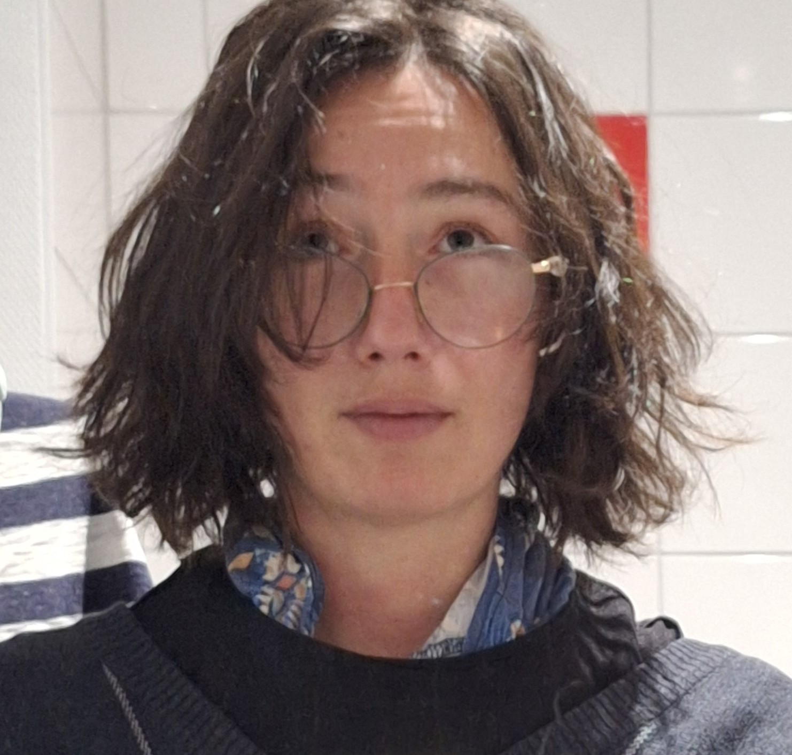
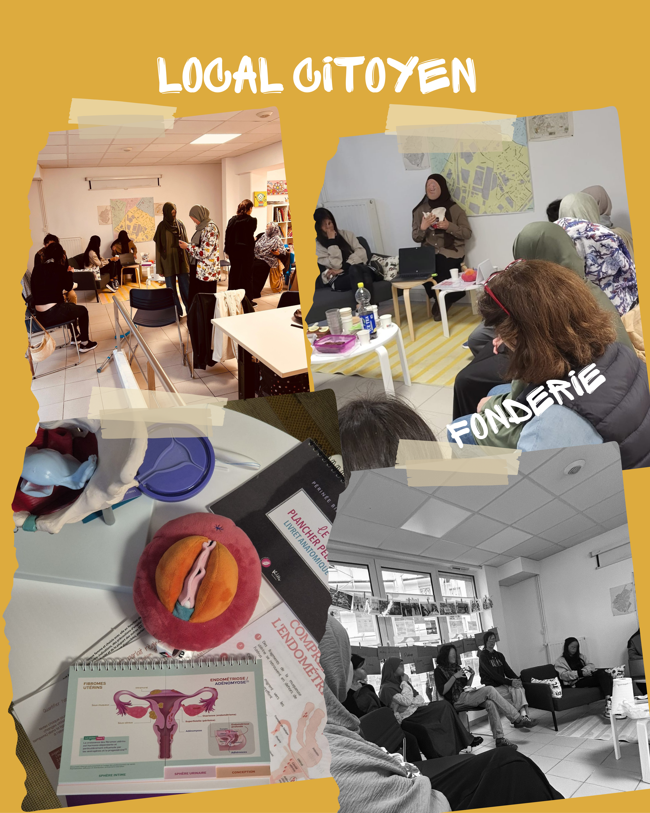
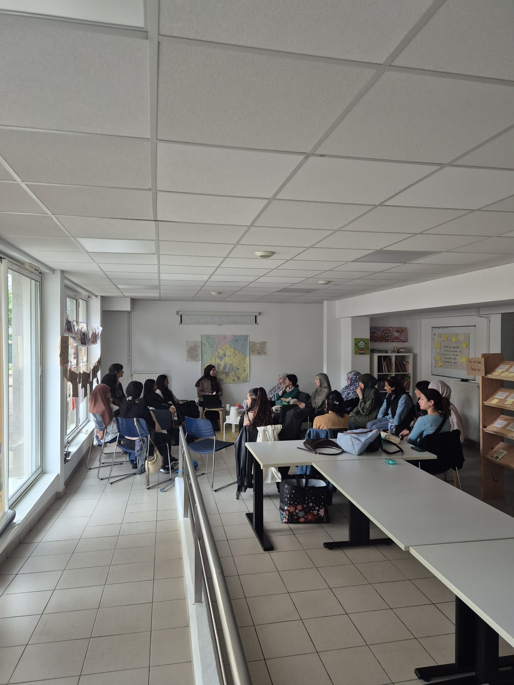
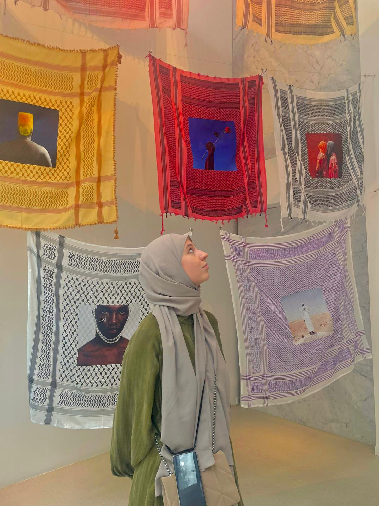
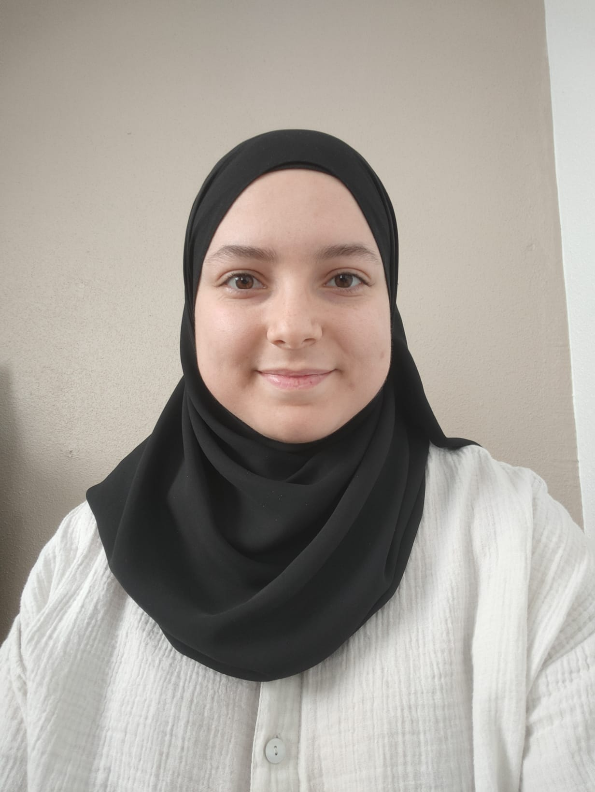
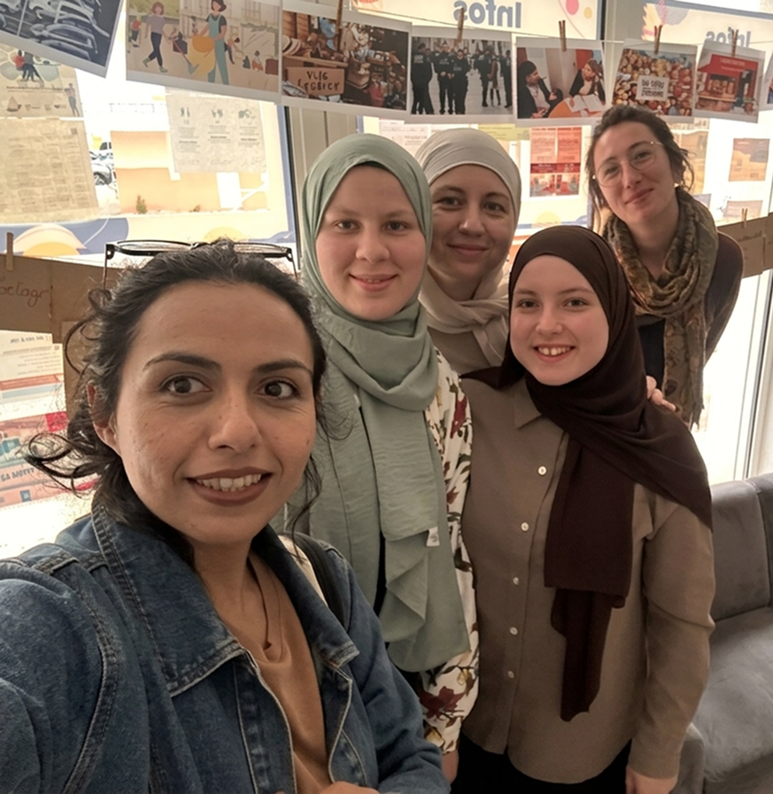
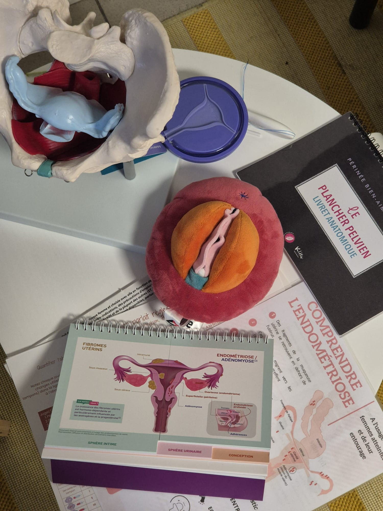
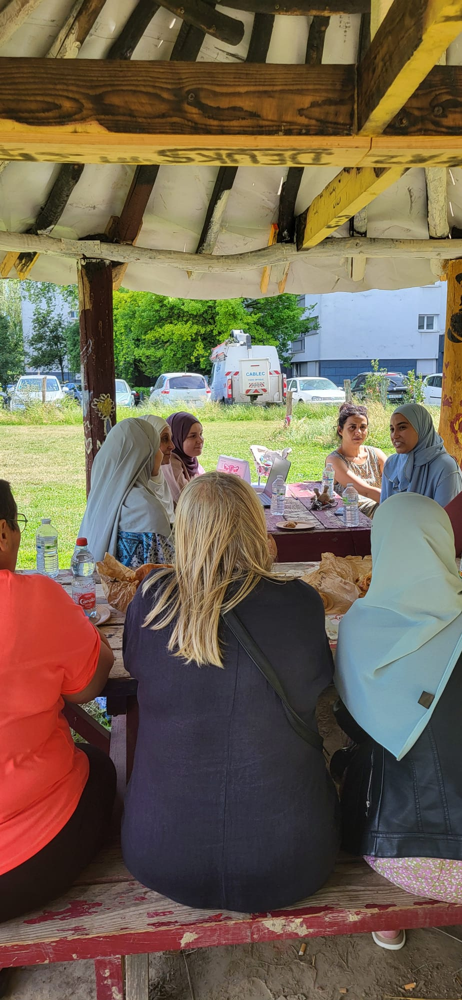
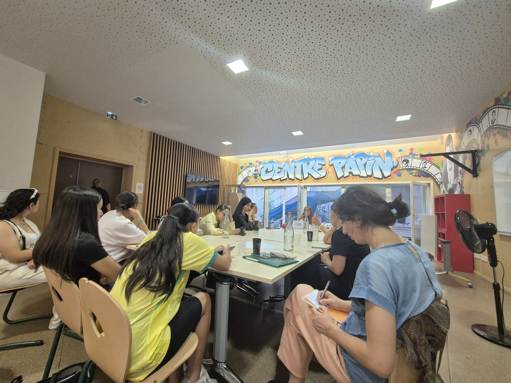

Camille Pousse
Psychologue
Rejoignez une dynamique d'entraide, d’écoute et de soin au cœur des quartiers de Mulhouse.


Créée en 2024, Santé en Commun est née d'un constat partagé : face aux déserts médicaux et aux difficultés administratives, le parcours de santé s'apparente parfois à un véritable parcours du combattant.
Notre mission ? Promouvoir la santé communautaire et valoriser les savoirs expérientiels. Nous organisons des Cafés Santé pour accompagner les habitants dans l'accès aux droits, loin de la pression du cabinet médical classique.
Des professionnelles engagées, à votre écoute autour d'un café.

Psychologue
Membre de l'équipe

Membre de l'équipe

Stagiaire

Sage-femme
Membre de l'équipe
Membre de l'équipe
Membre de l'équipe
Nous sommes un groupe mixte de chercheurs, de professionnels de santé et d'usagers, prêts à animer les quartiers de Mulhouse.
Si vous souhaitez contribuer à ces espaces d'information, d'entraide et de prévention, nous recherchons :
"Votre engagement, même ponctuel, contribue à faire vivre une communauté du soin."

Toute l'équipe !Rejoignez-nous lors de nos prochains événements à Mulhouse.

Notre toute première permanence ! Un moment d'échange incroyable où la parole s'est libérée sans tabou.

Un magnifique accueil. Une après-midi riche en partages autour de la santé globale des femmes.

Une nouvelle étape au CSC Papin avec toujours la même énergie : écoute, bienveillance et sororité.